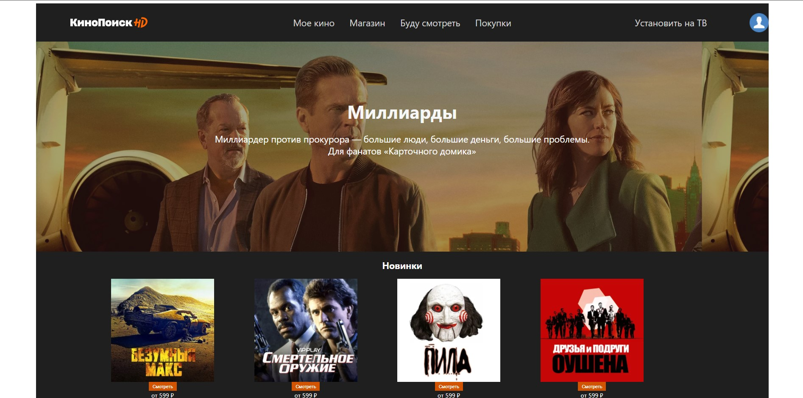
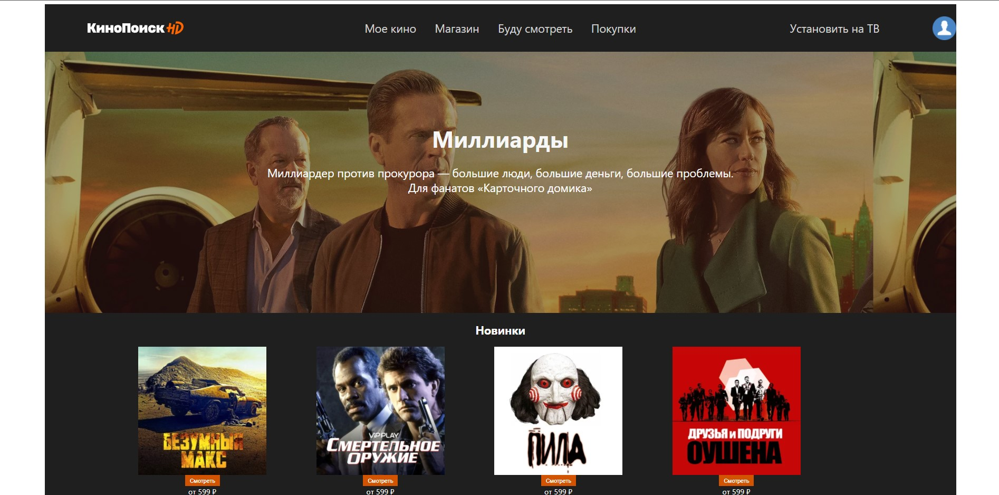

Нурланулы Нарулан
начинающий программист
Обо мне

Frond-eng разработчик из кульсары
Занимаюсь разработкой сайтов на Bootstrap и CSS,ф также пишу игры на Unity
Мне 14 лет,начал заниматься Front-end разработкой пару месяцев назад
Прохожу обучение программированию в IT-школе ITeasy
В данный момент активно изучаю язык CSS чтобы оживить свои сайты
Обожаю проводить время с друзьями.В свободное время занимюась физическими упражнениями
Мои работы:

Верстка Youtube
шаблон Youtube на Bootstrap,использовал оригинальные иконки Youtube.Работы была выполнена за 5 часов.Посмотреть подробнее можете в моем
Instagram profile
Школьное расписание
Сделал себе удобное расписание уроков для школы,чтобы смотреть его в любое удобное время.Посмотреть можете подробнее в моем
Instagram profile
 

Kinopoisk HD
Шаблон Kinopoisk на Bootstrap,выполнил работу для практики верстки.Узнал много пока делал эту работу.Посмотреть можете подробнее в моем
Instagram profile
Frond-eng разработчик из кульсары
Занимаюсь разработкой сайтов на Bootstrap и CSS,ф также пишу игры на Unity
Мне 14 лет,начал заниматься Front-end разработкой пару месяцев назад
Прохожу обучение программированию в IT-школе ITeasy
В данный момент активно изучаю язык CSS чтобы оживить свои сайты
Обожаю проводить время с друзьями.В свободное время занимюась физическими упражнениями
Мои работы:
Верстка Youtube
шаблон Youtube на Bootstrap,использовал оригинальные иконки Youtube.Работы была выполнена за 5 часов.Посмотреть подробнее можете в моем Instagram profile
Школьное расписание
Сделал себе удобное расписание уроков для школы,чтобы смотреть его в любое удобное время.Посмотреть можете подробнее в моем Instagram profile
Kinopoisk HD
Шаблон Kinopoisk на Bootstrap,выполнил работу для практики верстки.Узнал много пока делал эту работу.Посмотреть можете подробнее в моем Instagram profile